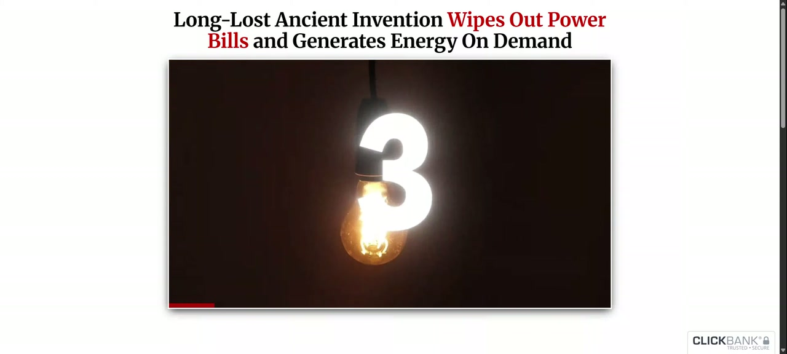
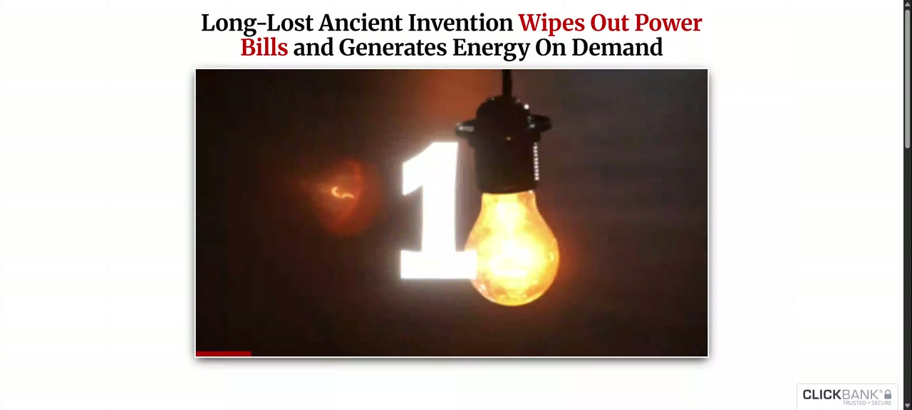
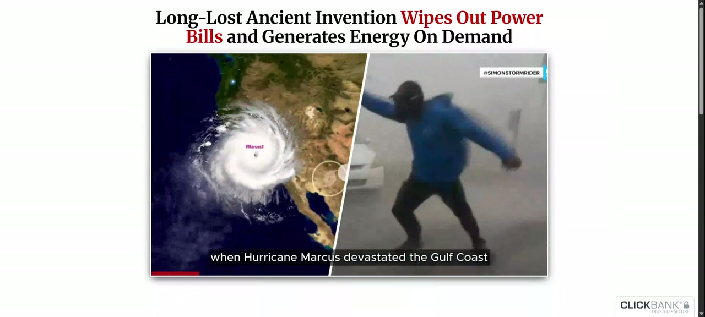
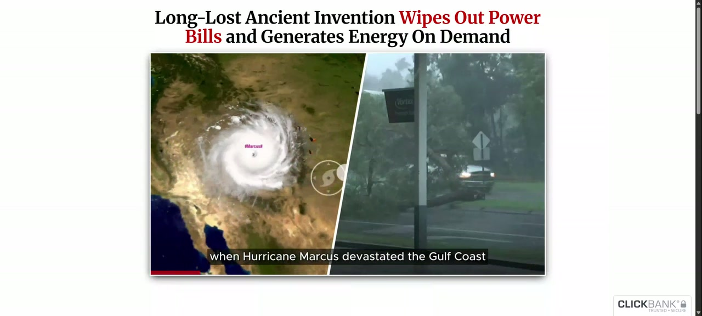

Offline timeline. Images are relative files next to this HTML. No remote scripts.
Source C:\Users\Tomas\AppData\Local\VSL Study\captures\010fac1ba67146b7a8f7c8e615dd9ca2\recording.fixed.webm
Duration 00:02:00.062 · 3840x1730 ·
audio yes · model small.en ·
device cpu
CUDA not available or not supported; using CPU (fp32). This is not real-time.
Processing notes
Container reports 1000 FPS from timestamp units; this is not a measured capture frame rate.
Video stream duration is 119.377s; container/audio duration is 120.062s. Screenshots stop at the last available video frame. Speech after that still uses the full soundtrack.
Variable frame rate detected. Screenshot times use presentation timestamps from ffmpeg, not frame_index/average_fps. Scene boundary seconds from PySceneDetect still use the decoder time base and may differ slightly on VFR.
Audio start_time=0.062s vs video start_time=0.000s. Extracted WAV is silence-padded so Whisper times stay on the video timeline.
Input: browser tab recording. Timestamps are relative to this recording, not the original video.
Recording id: `010fac1ba67146b7a8f7c8e615dd9ca2`
Stop reason: max_duration · complete: True
Address the user typed (not proof of the selected tab): `https://theenergyrevolution.net/index-ers-auto-lead-39-promise-epp-lead-6-v3-u7-u10.php`
Title: My first test ever
Recorded media duration: 120.062s
Timestamps are relative to this recording, not verified times in the original video. Pauses, buffering, lead-in, and seeking can make the two timelines differ. The URL is what the user typed; it is not proof that the selected tab matched.
Capture note: Container duration was missing; a copy remux restored seek metadata.
Gaps
{"type": "media_note", "detail": "Container reports 1000 FPS from timestamp units; this is not a measured capture frame rate."}
{"type": "media_note", "detail": "Video stream duration is 119.377s; container/audio duration is 120.062s. Screenshots stop at the last available video frame. Speech after that still uses the full soundtrack."}
{"type": "media_note", "detail": "Variable frame rate detected. Screenshot times use presentation timestamps from ffmpeg, not frame_index/average_fps. Scene boundary seconds from PySceneDetect still use the decoder time base and may differ slightly on VFR."}
{"type": "media_note", "detail": "Audio start_time=0.062s vs video start_time=0.000s. Extracted WAV is silence-padded so Whisper times stay on the video timeline."}
On-screen text (OCR)
OCR was turned off for this job.
Search filters this page locally:
seg_0001 00:00:00.000–00:00:09.080
A few years ago, when Hurricane Marcus devastated the Gulf Coast, leaving 1.8 million families
requested 00:00:00.000 scene scene_0001 nearby seg_0001
frame_0002 00:00:00.183 (scene_start)
requested 00:00:00.152 scene scene_0001 nearby seg_0001
frame_0003 00:00:00.583 (scene_start)
requested 00:00:00.553 scene scene_0002 nearby seg_0001
frame_0004 00:00:01.308 (scene_start)
requested 00:00:01.192 scene scene_0003 nearby seg_0001
frame_0005 00:00:01.408 (scene_start)
requested 00:00:01.408 scene scene_0004 nearby seg_0001
frame_0006 00:00:01.795 (scene_start)

requested 00:00:01.758 scene scene_0005 nearby seg_0001
frame_0007 00:00:02.792 (scene_start)

requested 00:00:02.709 scene scene_0006 nearby seg_0001
frame_0008 00:00:03.692 (scene_start)
requested 00:00:03.658 scene scene_0007 nearby seg_0001
frame_0009 00:00:04.159 (scene_start)
requested 00:00:04.108 scene scene_0008 nearby seg_0001
frame_0010 00:00:05.058 (interval)
requested 00:00:05.000 scene scene_0009 nearby seg_0001
frame_0011 00:00:05.058 (scene_start)

requested 00:00:05.041 scene scene_0009 nearby seg_0001
frame_0012 00:00:06.091 (scene_start)

requested 00:00:06.041 scene scene_0010 nearby seg_0001
frame_0013 00:00:10.058 (interval)
requested 00:00:10.000 scene scene_0010 nearby seg_0001, seg_0002
frame_0014 00:00:10.691 (scene_start)
requested 00:00:10.675 scene scene_0011 nearby seg_0001, seg_0002
frame_0015 00:00:12.164 (scene_start)
requested 00:00:12.141 scene scene_0012 nearby seg_0002
frame_0016 00:00:14.051 (scene_start)
requested 00:00:14.041 scene scene_0013 nearby seg_0002, seg_0003
frame_0017 00:00:15.008 (interval)
requested 00:00:15.000 scene scene_0013 nearby seg_0002, seg_0003
frame_0018 00:00:16.141 (scene_start)
requested 00:00:16.125 scene scene_0014 nearby seg_0002, seg_0003, seg_0004
frame_0019 00:00:20.041 (interval)
requested 00:00:20.000 scene scene_0014 nearby seg_0004, seg_0005
frame_0020 00:00:22.608 (scene_start)
requested 00:00:22.591 scene scene_0015 nearby seg_0004, seg_0005
frame_0021 00:00:25.008 (interval)
requested 00:00:25.000 scene scene_0015 nearby seg_0005
frame_0022 00:00:29.143 (scene_start)
requested 00:00:29.125 scene scene_0016 nearby seg_0005, seg_0006, seg_0007
frame_0023 00:00:30.009 (interval)
requested 00:00:30.000 scene scene_0016 nearby seg_0006, seg_0007
frame_0024 00:00:32.925 (scene_start)
requested 00:00:32.916 scene scene_0017 nearby seg_0007, seg_0008
frame_0025 00:00:33.959 (scene_start)
requested 00:00:33.908 scene scene_0018 nearby seg_0007, seg_0008
frame_0026 00:00:35.058 (interval)
requested 00:00:35.000 scene scene_0018 nearby seg_0007, seg_0008
frame_0027 00:00:39.158 (scene_start)
requested 00:00:39.148 scene scene_0019 nearby seg_0008, seg_0009
frame_0028 00:00:40.025 (interval)
requested 00:00:40.000 scene scene_0019 nearby seg_0008, seg_0009
frame_0029 00:00:43.125 (scene_start)
requested 00:00:43.125 scene scene_0020 nearby seg_0009, seg_0010
frame_0030 00:00:45.034 (interval)
requested 00:00:45.000 scene scene_0020 nearby seg_0009, seg_0010, seg_0011
frame_0031 00:00:50.024 (interval)
requested 00:00:50.000 scene scene_0020 nearby seg_0011, seg_0012, seg_0013
frame_0032 00:00:51.857 (scene_start)
requested 00:00:51.808 scene scene_0021 nearby seg_0011, seg_0012, seg_0013
frame_0033 00:00:52.191 (scene_start)
requested 00:00:52.174 scene scene_0022 nearby seg_0011, seg_0012, seg_0013
frame_0034 00:00:54.841 (scene_start)
requested 00:00:54.774 scene scene_0023 nearby seg_0013, seg_0014
frame_0035 00:00:55.025 (interval)
requested 00:00:55.000 scene scene_0023 nearby seg_0013, seg_0014
frame_0036 00:00:57.974 (scene_start)
requested 00:00:57.958 scene scene_0024 nearby seg_0014, seg_0015
frame_0037 00:00:58.711 (scene_start)
requested 00:00:58.691 scene scene_0025 nearby seg_0014, seg_0015
frame_0038 00:00:59.841 (scene_start)
requested 00:00:59.791 scene scene_0026 nearby seg_0014, seg_0015
frame_0039 00:01:00.012 (interval)
requested 00:01:00.000 scene scene_0026 nearby seg_0014, seg_0015
frame_0040 00:01:04.508 (scene_start)
requested 00:01:04.491 scene scene_0027 nearby seg_0015, seg_0016, seg_0017
frame_0041 00:01:05.041 (interval)
requested 00:01:05.000 scene scene_0027 nearby seg_0015, seg_0016, seg_0017
frame_0042 00:01:10.041 (interval)
requested 00:01:10.000 scene scene_0027 nearby seg_0017, seg_0018, seg_0019
frame_0043 00:01:12.191 (scene_start)
requested 00:01:12.174 scene scene_0028 nearby seg_0018, seg_0019
frame_0044 00:01:13.491 (scene_start)
requested 00:01:13.441 scene scene_0029 nearby seg_0018, seg_0019
frame_0045 00:01:15.024 (interval)
requested 00:01:15.000 scene scene_0029 nearby seg_0019, seg_0020
frame_0046 00:01:16.960 (scene_start)
requested 00:01:16.924 scene scene_0030 nearby seg_0019, seg_0020, seg_0021
frame_0047 00:01:17.491 (scene_start)
requested 00:01:17.408 scene scene_0031 nearby seg_0019, seg_0020, seg_0021
frame_0048 00:01:18.458 (scene_start)
requested 00:01:18.408 scene scene_0032 nearby seg_0020, seg_0021
frame_0049 00:01:19.891 (scene_start)
requested 00:01:19.841 scene scene_0033 nearby seg_0021, seg_0022
frame_0050 00:01:20.058 (interval)
requested 00:01:20.000 scene scene_0033 nearby seg_0021, seg_0022
frame_0051 00:01:21.025 (scene_start)
requested 00:01:21.013 scene scene_0034 nearby seg_0021, seg_0022
frame_0052 00:01:22.591 (scene_start)
requested 00:01:22.541 scene scene_0035 nearby seg_0021, seg_0022, seg_0023
frame_0053 00:01:24.124 (scene_start)
requested 00:01:24.074 scene scene_0036 nearby seg_0022, seg_0023
frame_0054 00:01:25.024 (interval)
requested 00:01:25.000 scene scene_0036 nearby seg_0022, seg_0023, seg_0024
frame_0055 00:01:25.291 (scene_start)
requested 00:01:25.274 scene scene_0037 nearby seg_0022, seg_0023, seg_0024
frame_0056 00:01:27.108 (scene_start)
requested 00:01:27.091 scene scene_0038 nearby seg_0023, seg_0024
frame_0057 00:01:29.553 (scene_start)
requested 00:01:29.507 scene scene_0039 nearby seg_0024, seg_0025
frame_0058 00:01:30.108 (interval)
requested 00:01:30.000 scene scene_0039 nearby seg_0024, seg_0025
frame_0059 00:01:31.807 (scene_start)
requested 00:01:31.758 scene scene_0040 nearby seg_0024, seg_0025
frame_0060 00:01:33.941 (scene_start)
requested 00:01:33.891 scene scene_0041 nearby seg_0025, seg_0026
frame_0061 00:01:34.674 (scene_start)
requested 00:01:34.658 scene scene_0042 nearby seg_0025, seg_0026
frame_0062 00:01:35.041 (interval)
requested 00:01:35.000 scene scene_0042 nearby seg_0025, seg_0026
frame_0063 00:01:35.980 (scene_start)
requested 00:01:35.646 scene scene_0043 nearby seg_0025, seg_0026
frame_0064 00:01:35.980 (scene_start)
requested 00:01:35.962 scene scene_0044 nearby seg_0025, seg_0026
frame_0065 00:01:36.346 (scene_start)
requested 00:01:36.325 scene scene_0045 nearby seg_0025, seg_0026
frame_0066 00:01:36.746 (scene_start)
requested 00:01:36.725 scene scene_0046 nearby seg_0025, seg_0026
frame_0067 00:01:40.009 (interval)
requested 00:01:40.000 scene scene_0046 nearby seg_0026, seg_0027
frame_0068 00:01:42.507 (scene_start)
requested 00:01:42.491 scene scene_0047 nearby seg_0027
frame_0069 00:01:44.507 (scene_start)
requested 00:01:44.458 scene scene_0048 nearby seg_0027, seg_0028
frame_0070 00:01:45.041 (interval)
requested 00:01:45.000 scene scene_0048 nearby seg_0027, seg_0028
frame_0071 00:01:47.474 (scene_start)
requested 00:01:47.424 scene scene_0049 nearby seg_0027, seg_0028, seg_0029
frame_0072 00:01:47.974 (scene_start)
requested 00:01:47.924 scene scene_0050 nearby seg_0027, seg_0028, seg_0029
frame_0073 00:01:50.026 (interval)
requested 00:01:50.000 scene scene_0050 nearby seg_0029, seg_0030
frame_0074 00:01:50.724 (scene_start)
requested 00:01:50.690 scene scene_0051 nearby seg_0029, seg_0030
frame_0075 00:01:51.191 (scene_start)
requested 00:01:51.107 scene scene_0052 nearby seg_0029, seg_0030
frame_0076 00:01:52.924 (scene_start)
requested 00:01:52.874 scene scene_0053 nearby seg_0030
frame_0077 00:01:55.024 (interval)
requested 00:01:55.000 scene scene_0053 nearby seg_0030
frame_0078 00:01:57.593 (scene_start)
requested 00:01:57.541 scene scene_0054 nearby seg_0030, seg_0031
frame_0079 00:01:58.141 (scene_start)
requested 00:01:58.124 scene scene_0055 nearby seg_0030, seg_0031
frame_0080 00:01:59.376 (interval)
requested 00:01:59.377 scene scene_0055 nearby seg_0031
media_note
{
"type": "media_note",
"detail": "Container reports 1000 FPS from timestamp units; this is not a measured capture frame rate."
}
media_note
{
"type": "media_note",
"detail": "Video stream duration is 119.377s; container/audio duration is 120.062s. Screenshots stop at the last available video frame. Speech after that still uses the full soundtrack."
}
media_note
{
"type": "media_note",
"detail": "Variable frame rate detected. Screenshot times use presentation timestamps from ffmpeg, not frame_index/average_fps. Scene boundary seconds from PySceneDetect still use the decoder time base and may differ slightly on VFR."
}
media_note
{
"type": "media_note",
"detail": "Audio start_time=0.062s vs video start_time=0.000s. Extracted WAV is silence-padded so Whisper times stay on the video timeline."
}